← На главную
Новости и акции
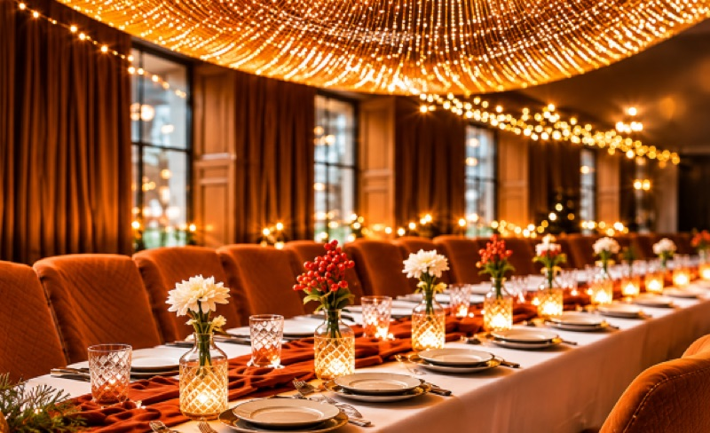
12 ноября 2026Заказывайте корпоратив в «Углях»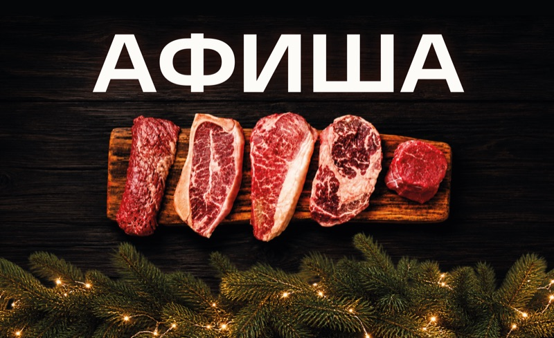
22 октября 2026🎄Афиша мероприятий на ДЕКАБРЬ 2026 4 августа 2026Афиша мероприятий на Ноябрь 2026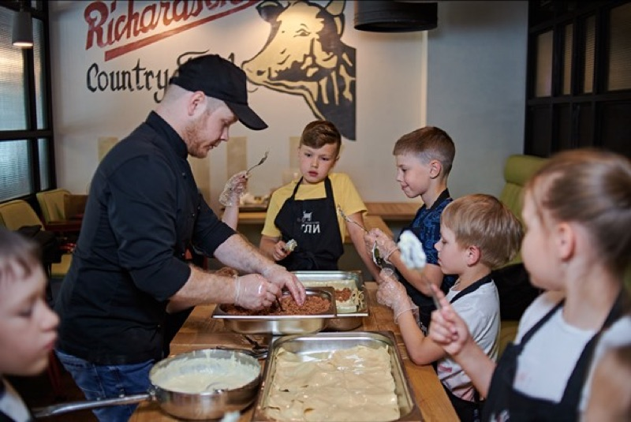
30 апреля 2026Детские мастер-классы в Ноябре 2026 1 марта 2026Диджей-сеты в «Угли»: музыка, огонь и премиальные вечера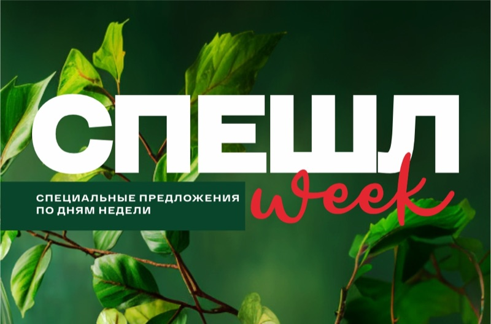
1 марта 2026АКЦИИ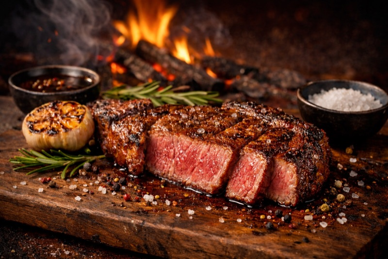
3 февраля 2026ВАГЮ в «Углях»: специальное предложение 21 января 2026Чизбургер в подарок!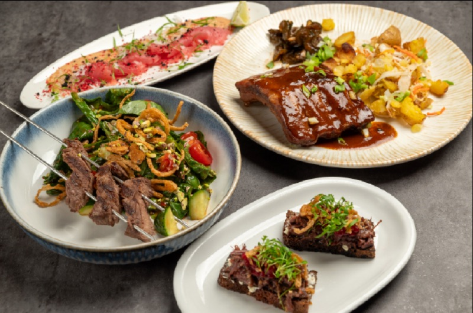
7 января 2026Один ужин — вся философия «Угли»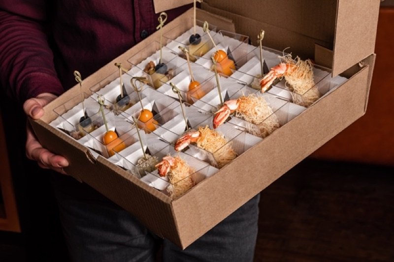
1 декабря 2025Фуршеты с доставкой домой и в офис 28 ноября 2025Бонусы при бронировании свадьбы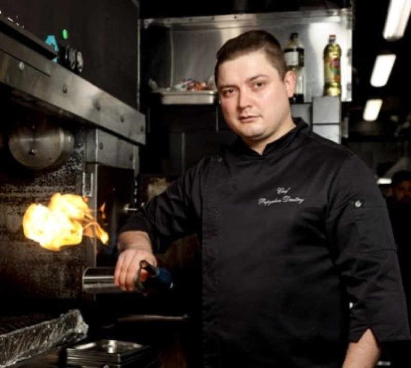
20 октября 2025Мастер-классы по приготовлению стейков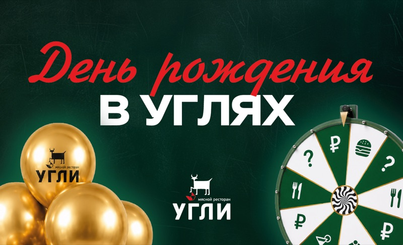
23 сентября 2024Празднуйте День рождения в ресторане УГЛИ!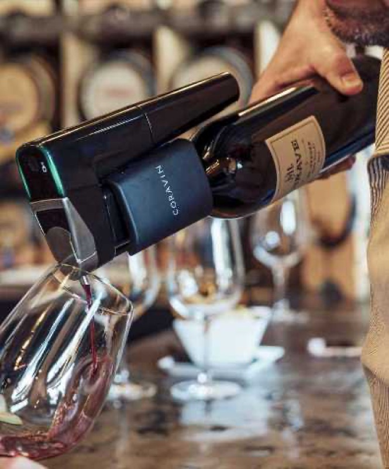
9 сентября 2024Попробуйте Coravin! 23 февраля 2024Дарим скидку 10% за самовывоз по карте лояльности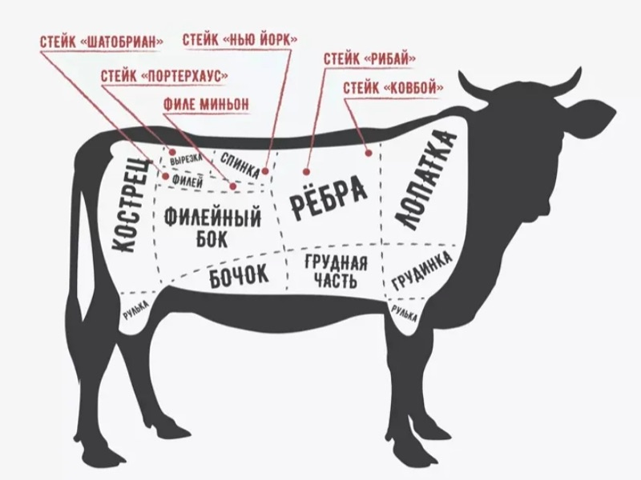
20 июня 2022Классический или альтернативный стейк 2 июня 2022Степени прожарки стейков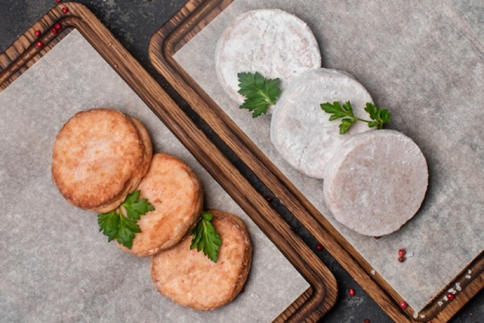
1 июня 2022ДОСТАВКА ПОЛУФАБРИКАТОВ 1 июня 2022Доставим блюда детского меню 1 июня 2022Испечем и доставим торт для вашего праздника 1 июня 2022В гости НЕ с пустыми руками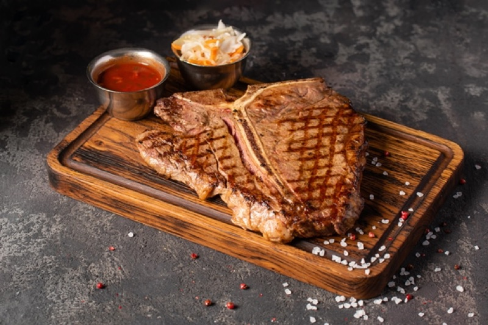
1 июня 2022Готовим дома идеальный стейк. Лайфхаки от шефа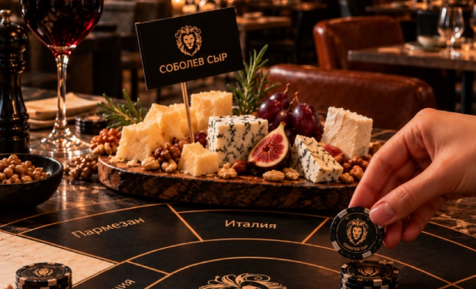
Сырное казино — гастрономическая игра для вашей компании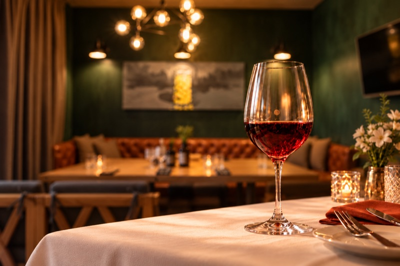
Винные интерактивы для ярких праздниковБанкетный зал для вашего идеального мероприятия!
УГЛИ - ресторан созданный для больших и маленьких торжеств. Основное помещение ресторана поделено на уютные зоны, рассчитанные на компании от 8 до 40 человек.
По вашему желанию мы составим тематическое меню, оформим стол, посоветуем хорошего ведущего, DJ и фотографа. И, конечно, обеспечим первоклассный сервис.
Для ВАС:
- Средний чек от 1500 руб
- Отдельные банкетные залы на 10, 15, 30 и 40 человек
- Специальные цены на алкоголь*
- Банкетное и фуршетное меню
- Музыкальная аппаратура
- Экран и проектор, флип чарт
- Бесплатный паркинг возле ресторана
- Обученный персонал, всегда готовый пойти вам навстречу
*предложение доступно для второго этажа, если компания занимает весь зал
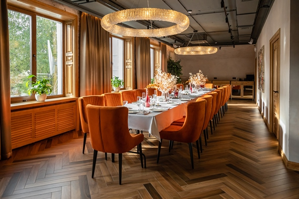

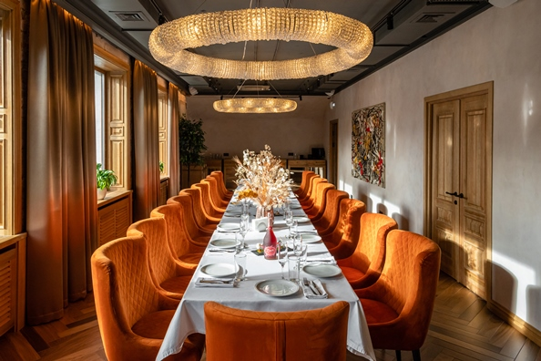
Меню для банкета


Звоните по номеру +7 (922) 020-88-06 и наш банкетный менеджер Екатерина с радостью ответит на все вопросы и предложит решение на любые запросы
Оставить заявку